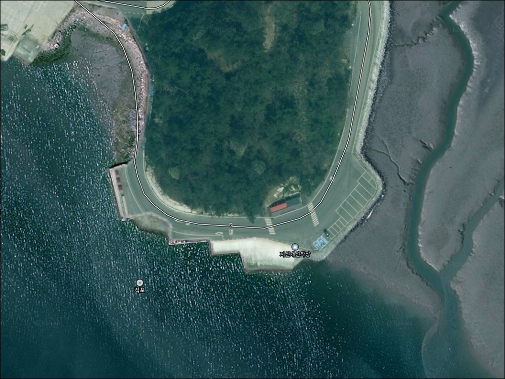
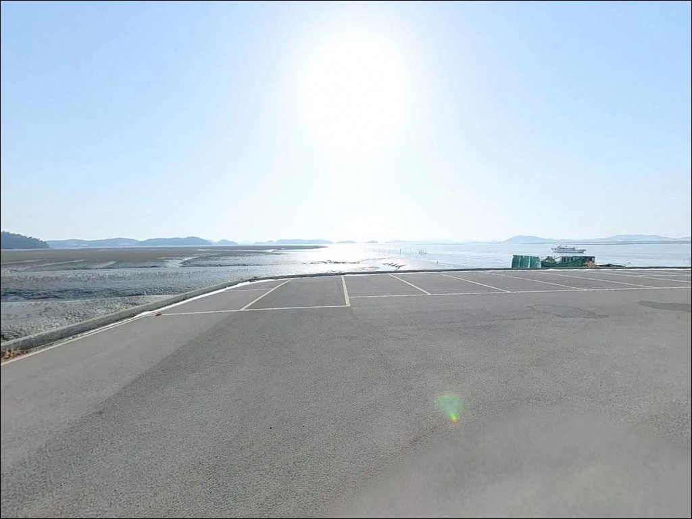
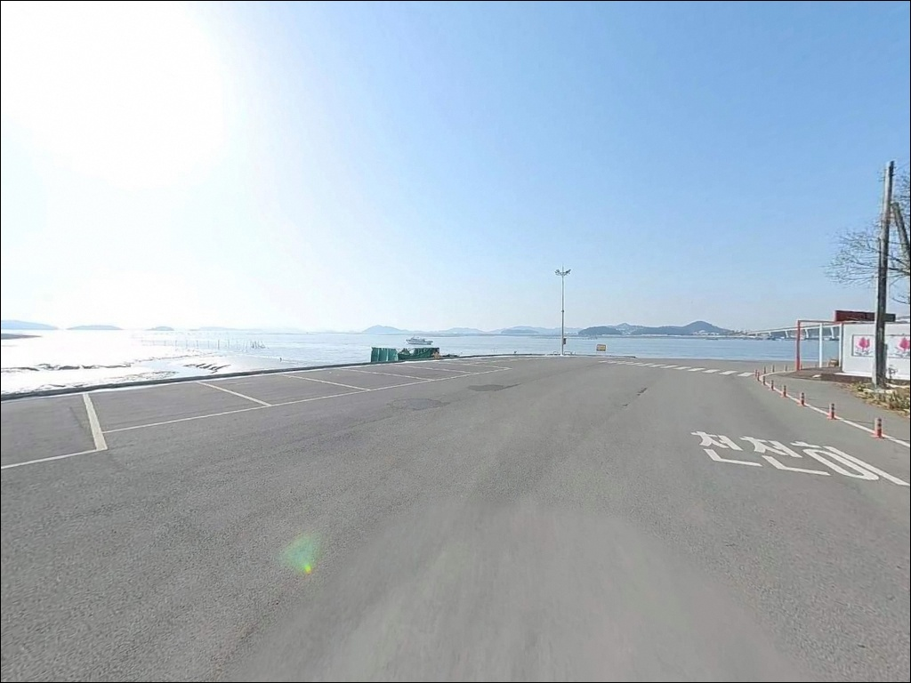
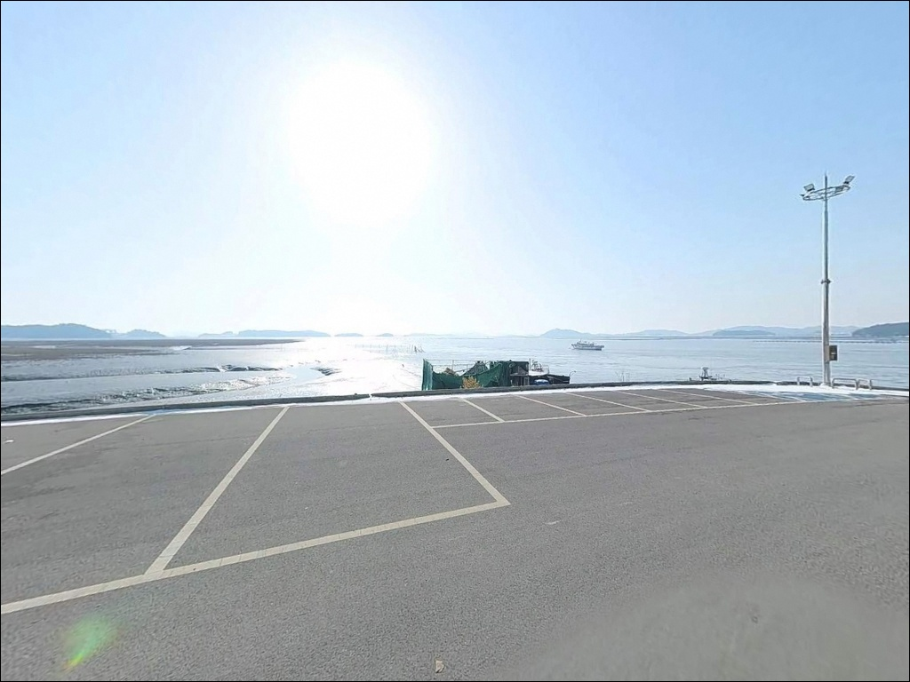
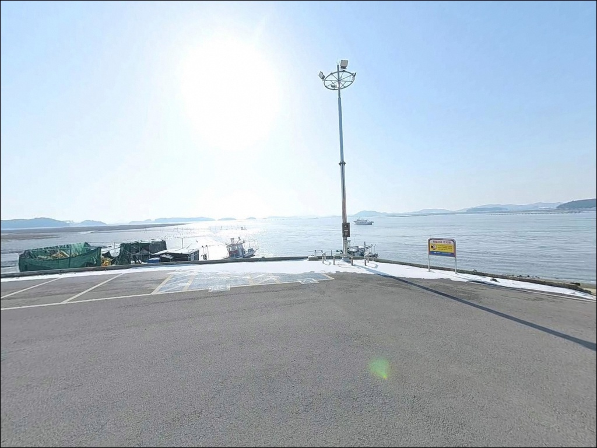
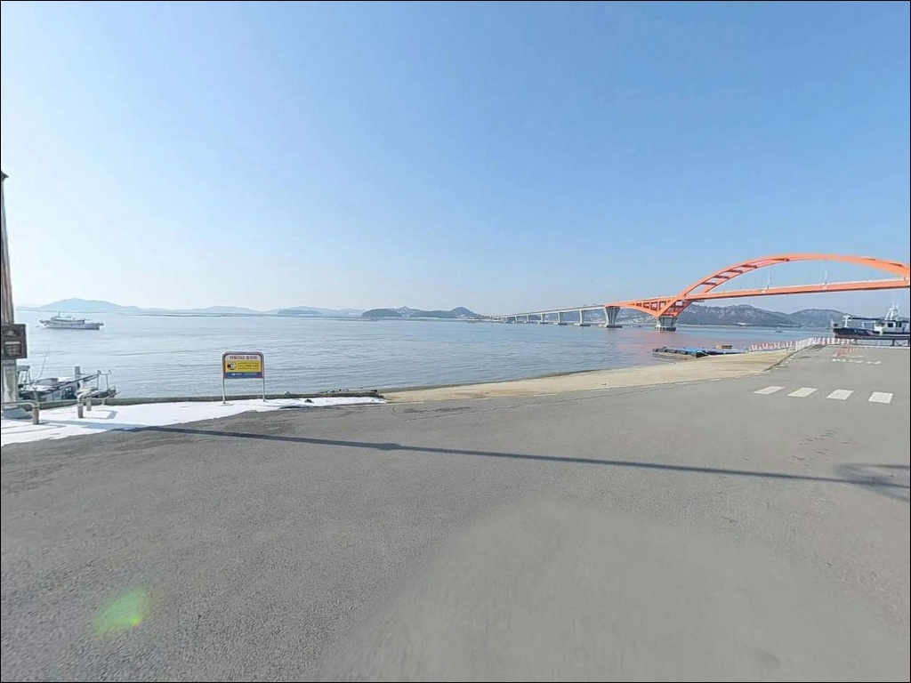
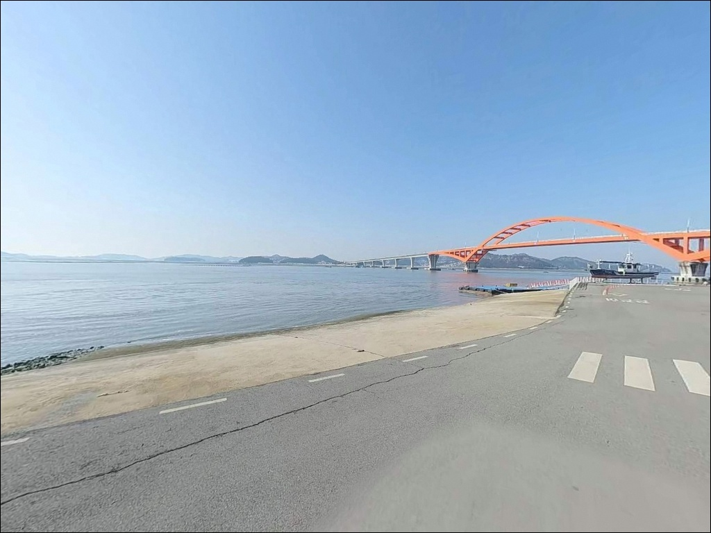
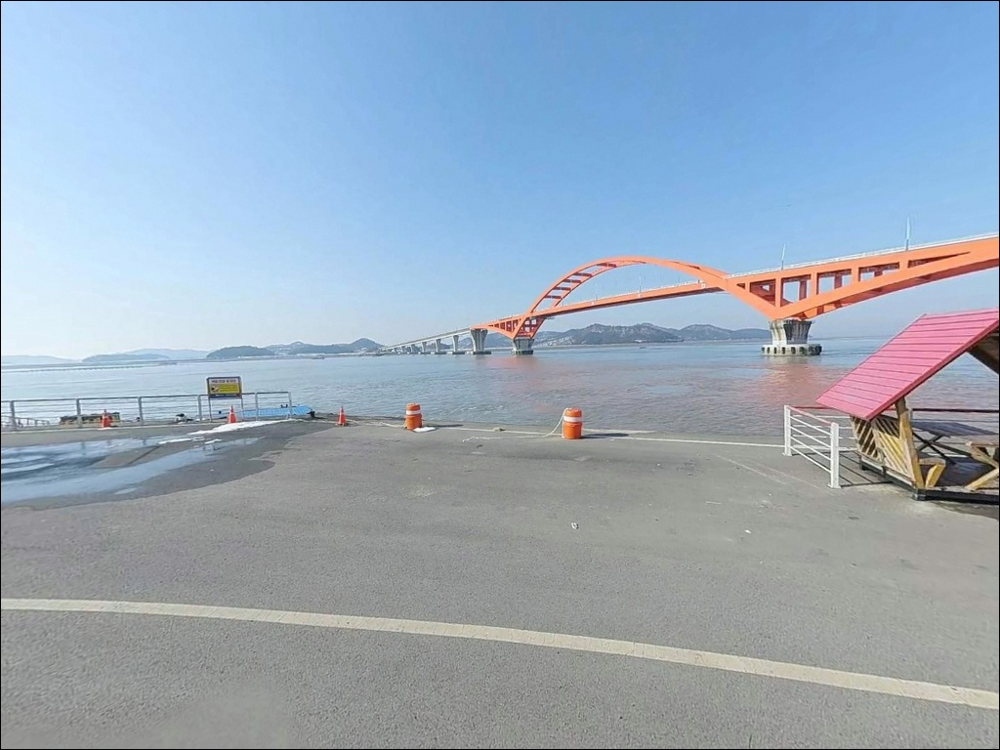
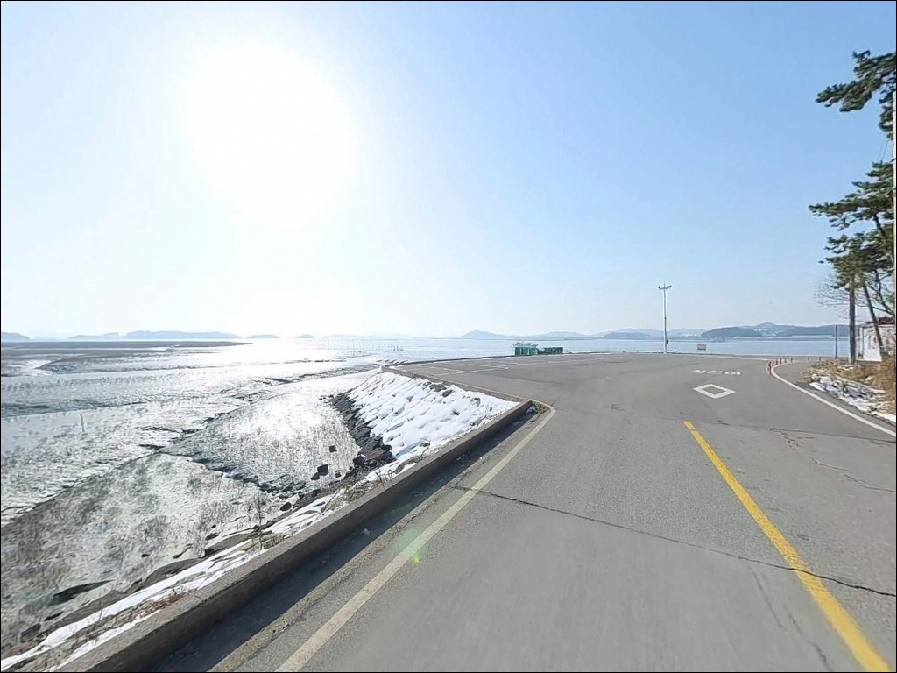

지신개선착장, 전남 신안군 노을빛이 스며드는 차박, 낚시 겸용 감성 장소
이 페이지에는 광고(제휴 링크 포함)가 있으며, 광고 링크를 통해 구매하면 운영자가 판매 수익 또는 수수료를 받을 수 있습니다. 포인트 사진: 카카오맵 스카이뷰·로드뷰. 이 페이지의 지도·사진 이미지는 카카오맵의 실제 서비스 이미지와 다를 수 있습니다.


포인트 안내
지신개선착장
전남 신안군 지도읍 탄동리 482-2
물때를 확인하지 않고 지신개선착장에 도착하면
선착장 앞이 갯벌로 드러나 있는 장면을
맞닥뜨리게 됩니다.
서해 다도해 특유의 큰 조차로 인해
간조 시에는 수심이 급격히 낮아지고,
어떤 채비를 써도 효과가 없는 상황이
만들어집니다.
사옥도 북동단 탄동리에 자리한 지신개선착장은
증도 방면을 바라보는 소규모 선착장입니다.
병풍도·기점·소악도 방향 배편 출발지로도 활용되는 곳으로,
낚시꾼 사이에서는 붕장어 원투낚시와
가을 삼치·갑오징어 루어 포인트로 이름이 알려진
서해 다도해형 생활낚시 선착장입니다.
이 글은 지신개선착장의 진입 여건, 물때 기반 낚시 판단 기준,
가을 시즌 공략 조건에 집중합니다.
조황 단정이나 특정 어종 보장은
이 글의 범위에 포함되지 않습니다.

1. 선착장 진입 동선과 주차 여건
탄동리까지 이어지는 진입로는 포장도로로,
일반 승용차 기준으로 접근에 큰 어려움이 없는 편입니다.
다만 사옥도 내 어촌 마을 특성상
선착장 인접 구간은 도로 폭이 좁아지는 구간이 있어,
대형 차량이나 캠핑카라면 출발 전
진입로 폭을 미리 확인하는 것이 안전합니다.
주차는 선착장 입구 인근 공영주차장 또는
선착장 옆 공터를 활용하는 방식이 일반적입니다.
병풍도 행 배편 이용객을 수용하기 위한
임시 주차 공간이 조성되어 있어,
소형~중형 차량 기준으로는
주차와 회차 여건이 비교적 안정적인 편입니다.
선착장은 도선·여객선이 오가는 공간입니다.
어선 작업 구간과 배편 승하선 동선을
막지 않는 자리를 먼저 확인하고 주차하는 것이
기본 매너입니다.

2. 차박 환경과 야간 체류 여건
탄동리 일대는 민가 밀집도가 낮은 소규모 어촌 취락으로,
야간에는 차량 통행이 거의 없는 편입니다.
외부 노출이 적은 구조여서
프라이버시는 비교적 양호한 편입니다.
가로등이 제한적인 구간이 많아
개인 조명 장비는 반드시 준비해야 합니다.
차박을 계획한다면 여객선 운항 시간대를
미리 파악해 두는 것이 필요합니다.
배편 이용객 차량이 몰리는 시간대가 있어,
선착장 입구 주차 공간 점유는
운항 시간대를 피해 조정하는 편이 좋습니다.
낚시를 마치고 조용히 하룻밤 머무는 용도로는
나쁘지 않은 자리입니다.


3. 주변 편의시설과 인프라 현황
지신개선착장 반경 3km 이내에서
편의점이나 마트를 기대하기는 어렵습니다.
사옥도 특성상 생활 인프라가 집중된 지역이 아니어서,
완전 자급 체제로 진입하는 것이
현실적인 준비 방향입니다.
식수, 얼음, 낚시 미끼, 연료는
출발 전 지도읍 읍내에서 모두 갖추고 가야 합니다.
지도읍 읍내로 이동하면
농협하나로마트 지도점과
지도공용버스터미널 인근 식당가, 주유소를
이용할 수 있습니다.
읍내를 기점으로 잡고
물자를 충분히 챙긴 뒤 탄동리로 향하는 것이
헛걸음을 줄이는 방법입니다.

4. 출발 전 반드시 챙겨야 할 준비사항
지신개선착장 방문에서 가장 먼저 확인할 것은
물때입니다.
서해안은 조차가 커 만조와 간조 사이
수위 차이가 크게 벌어집니다.
간조 시에는 선착장 앞 수심이 급격히 낮아져
낚시 자체가 어려운 상황이 만들어지고,
만조 전후 2~3시간이 집중 공략 시간대입니다.
바다타임에서 탄동리 기준 물때를 확인하고
출발 시각을 맞추는 것이 기본입니다.
기상 확인도 빠질 수 없습니다.
섬 지역 특성상 기상 변화가 빠르고
바람 방향에 따라 선착장 여건이 달라집니다.
당일 아침 기상청 예보를 한 번 더 확인하고,
채비 손실에 대비해
여분 채비는 넉넉하게 준비하는 것이 좋습니다.
지신개선착장은 물때를 맞추지 않으면
간조 시 갯벌만 남는 서해 다도해 특성을
그대로 가진 포인트입니다.

5. 서해 물때가 결정하는 지신개 낚시 여건
지신개선착장은 서쪽으로 길게 뻗은 일자형 선착장 구조입니다.
내항 쪽에는 어선이 계류되어 있으며,
선착장 끝단과 외항 방향이
수심 변화가 있는 핵심 자리입니다.
주변은 갯벌과 모래가 섞인 바닥 구조로,
원투낚시로 바닥 어종을 노리는 방식이
이 포인트 구조에 잘 맞습니다.
사옥도를 감싸는 조류 흐름의 영향으로
물이 들어오는 창조 시간대에는
선착장 외항 쪽으로 조류가 형성됩니다.
이 조류 흐름이 회유성 어종이 지나는
길목 역할을 하는 구간이기도 하며,
가을 시즌에는 삼치와 갑오징어가
이 수로를 따라 움직이는 경향이 있습니다.
바닥은 펄과 모래가 혼합된 구조여서
밑걸림은 심하지 않은 편입니다.
선착장 끝단에서 외항 방향으로
채비를 멀리 보낸 뒤 천천히 탐색하는 것이
이 포인트의 기본 공략 패턴입니다.
최신 조황은 출조 전 반드시 검색해 보시기 바랍니다.


6. 지신개선착장에 어울리는 낚시 스타일
원투낚시가 이 포인트에서 가장 기본이 되는 방식입니다.
펄·모래 혼합 바닥과 선착장 끝단 수심 변화 구간은
붕장어, 노래미, 광어, 도다리를
기대해 볼 수 있는 조건을 갖추고 있습니다.
만조 전후 조류가 흐르는 시간대에
선착장 끝에서 외항 방향으로 채비를 멀리
보내는 것이 기본 방식입니다.
가을 삼치 시즌에는 메탈지그를 활용한
워킹 루어낚시가 어울리는 방식입니다.
선착장 끝단에서 외항 방향으로 메탈지그를 투척한 뒤
빠르게 리트리브하는 방식으로,
삼치가 회유하는 가을 시즌 창조 시간대에
집중 시도할 만한 스타일입니다.
갑오징어 에깅도 가을 시즌에 병행할 수 있습니다.
물이 들어오는 시간대에
선착장 끝단 수심이 확보되는 구간에서
에기를 천천히 가라앉히며 탐색하는 방식입니다.
찌낚시는 내항 쪽 조류가 약한 구간에서
감성돔·숭어를 노리는 방식으로
만조 전후에 시도할 수 있습니다.
가을 삼치 루어와 갑오징어 에깅은
모두 선착장 끝단 외항 방향이 기본 자리이며,
물이 들어오는 시간대에 집중해야 결과가 달라집니다.

7. 대안 포인트와 플랜 B 동선
지신개선착장 여건이 여의치 않거나
물때가 맞지 않을 때는
사옥도 선착장이 같은 사옥도 내
첫 번째 대안입니다.
바다타임에 포인트로 등재된 곳으로,
같은 해안선을 공유해 이동 거리가 짧습니다.
사옥도에서 나와 인근 해역으로 이동할 경우
증도대교 북단 포인트를 고려해 볼 수 있습니다.
교각 인근 특성상 조류가 집중되는 구간이 있어
루어낚시와 원투낚시 모두
시도해 볼 만한 구조의 포인트입니다.
규모가 더 크고 편의시설 접근성이 좋은 포인트를
원한다면 송도항이나 증도항이 대안입니다.
같은 신안 해역 내에 위치하며,
낚시 포인트와 주변 인프라를 함께 해결하기에
유리한 곳입니다.
지신개를 처음 찾는다면
송도항을 기점으로 잡고
지신개를 병행 탐색하는 동선이
효율적입니다.

물때를 알면
지신개선착장이 달리 보입니다
붕장어 원투낚시를 즐기거나
가을 삼치·갑오징어를 노리는 낚시인이라면
지신개선착장의 지형 조건은
잘 맞는 구조입니다.
온라인 정보가 많지 않아
한적하게 즐길 수 있는
서해 다도해형 생활낚시 포인트이기도 합니다.
반면 물때 계산 없이 진입하거나
자급 준비 없이 출발하면
낚시도 체류도 모두 불편해지는 곳입니다.
물때 확인, 자급 준비, 진입로 사전 점검,
이 세 가지를 갖추고 간다면
기억에 남는 조용한 포인트가 될 수 있습니다.
가로등이 적은 한적한 선착장에서
물이 들어오는 시간을 맞춰 원투 채비를 내리고
하룻밤 머무는 차박 낚시라면,
지신개선착장은 조용하게 서해 다도해를
즐기기에 나쁘지 않은 선택입니다.